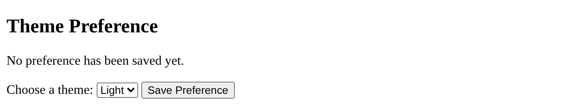
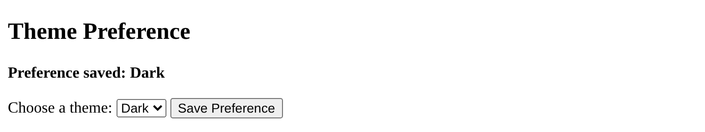

Write a PHP code that sets a cookie based on user input.
Program 9.5: Setting a Cookie Using User Input
Concepts used
POST form, validation of the submitted value with in_array(), setcookie() with a 30-day expiration, $_COOKIE, sticky selection.
Test data: Theme preference chosen from Light and Dark. The value Dark is submitted; the page is then opened again later.
Logic
- Read the cookie theme if it exists and is one of the allowed values.
- When the form is submitted, read the chosen theme and check that it is allowed.
- If it is allowed, set the cookie for 30 days and display a confirmation; the submitted value is used for the message, because the cookie is available only from the next request.
- Display the form, with the saved or submitted theme selected.
Code
<?php$allowed = ["Light", "Dark"];$message = ""; // Preference saved on an earlier visit, if any$saved = $_COOKIE["theme"] ?? "";if (!in_array($saved, $allowed)) { $saved = ""; // ignore a missing or changed value} if ($_SERVER["REQUEST_METHOD"] == "POST") { $theme = $_POST["theme"] ?? ""; if (in_array($theme, $allowed)) { setcookie("theme", $theme, time() + 30 * 24 * 60 * 60, "/"); $saved = $theme; // use the new value on this request $message = "Preference saved: $theme"; } else { $message = "Please choose a valid theme."; }}?><!DOCTYPE html><html lang="en"><head> <meta charset="UTF-8"> <title>Theme Preference</title></head><body> <h2>Theme Preference</h2> <?php if ($message != ""): ?> <p><strong><?php echo htmlspecialchars($message); ?></strong></p> <?php elseif ($saved != ""): ?> <p>Your saved theme preference: <?php echo $saved; ?></p> <?php else: ?> <p>No preference has been saved yet.</p> <?php endif; ?> <form method="post"> <label for="theme">Choose a theme:</label> <select id="theme" name="theme"> <?php foreach ($allowed as $t): ?> <option value="<?php echo $t; ?>" <?php if ($t == $saved) echo "selected"; ?>><?php echo $t; ?></option> <?php endforeach; ?> </select> <input type="submit" value="Save Preference"> </form></body></html>
Output
These are real screenshots, taken by running the program with the test data.


Understanding the output
The second output confirms that the value chosen by the user was accepted and saved. The third output, displayed on a later request without any submission, shows that the value came back from the browser in the cookie; because the cookie has a 30-day expiration, it survives the closing of the browser. If the user edits the cookie in the browser to an invalid value such as Blue, the page ignores it and shows that no preference has been saved.
How it works
Reading the old preference: At the top, the page reads the theme cookie with ??. Since a cookie can be changed by the user, the value is accepted only if it is one of the allowed themes; any other value is ignored.
Saving the new preference: When the form is submitted, the chosen value is read from $_POST and checked with in_array(). A valid value is stored in a cookie that lasts 30 days, and the confirmation "Preference saved: Dark" is prepared. Since the new cookie will appear in $_COOKIE only on the next request, the program also copies the value into $saved, so that the drop-down list shows Dark as selected at once. All of this happens before any output, so the cookie header can be sent.
Later visits: When the page is opened again, even after closing and reopening the browser, the browser sends the cookie, and the page displays the saved preference without any form submission.
Run it yourself
Real PHP 8.3 runs inside your browser (nothing is sent to a server). Forms, links, cookies and sessions work as they do in XAMPP. The first run downloads PHP, so it needs internet and takes a few seconds.
Try this:
- Save Dark, then click Run again to open the page later.
- Click "Clear cookies & session" and run again to see the first-visit message.
Running it in XAMPP
Save the file in C:\xampp\htdocs\phpbook\ch09 and open http://localhost/phpbook/ch09/preference.php. Choose Dark and click Save Preference. Then close the browser, reopen it and open the same address.
Common mistakes
- Saving the submitted value in the cookie without checking it against the allowed values.
- Reading
$_COOKIE["theme"]immediately aftersetcookie()to display the confirmation, which shows the old value or nothing. - Placing the form or any HTML before the
setcookie()call.
Viva questions
How is the value of a cookie set from user input?
Why is the value checked against a list of allowed values?
How is a cookie deleted?
setcookie("theme", "", time() - 3600).